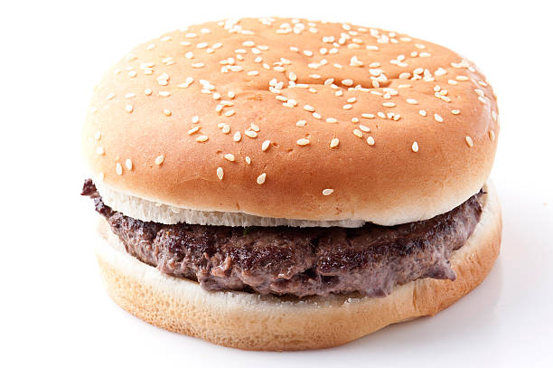

Burgers

A simple recipe for making plain burgers.
This one is pretty simple, but still one of my favorites.
Ingredients:
- Angus ground beef, 93% lean
- One packet of onion dry soup and dip mix (per pound of beef)
- One raw egg
- Buns (optional)
Steps:
- Preheat the grill at a medium temperature (400-600)
- Mix beef with the onion powder and the raw egg in a mixing bowl
- After thorough mixing, form half pound spheres by hand
- Flatten the burgers into pattys, being sure to keep the center of each patty slightly thinner than the outsides, to allow for better cooking
- Cook each patty for roughly 15 minutes, flipping them halfway
- After they are finished cooking, feel free to put them on buns and dig in!